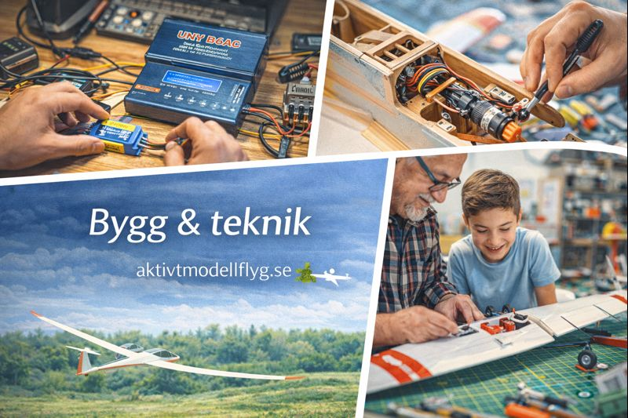

Tanken med detta galleri är att visa bygge och teknik som man kanske mer gör hemma, gärna foto där man ser själva arbetet på går, en hand eller person med i bilden. Ett enklare tips.
Visa hur mycket man lär sig av hobbyn och andra.
Visa hur mycket man lär sig av hobbyn och andra.
Blädda med knapparna

Bygg & teknik
Välkommen till galleriet
Välkommen till galleriet